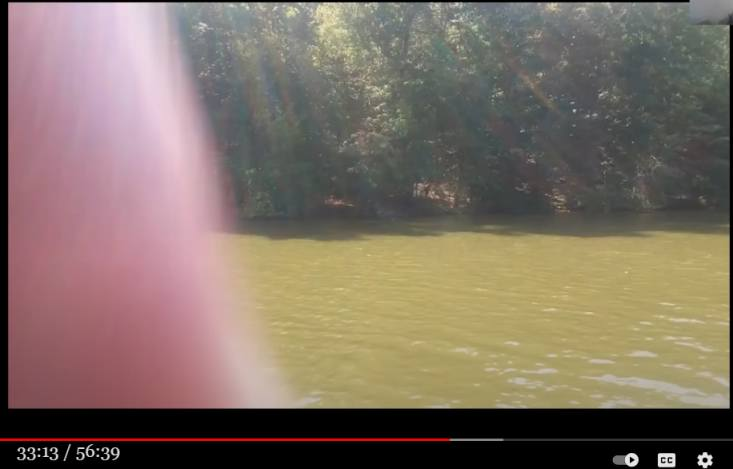

Verify Cliff Barackman's claim of "Bigfoot's best photographic evidence"
Preface
- Bigfoot enthusiasts/researchers can be categorized into two types.
- (A) Bigfoot is just an ordinary creature with a large body. Bigfoot has nothing to do with the supernatural.
- (B) Bigfoot is not an ordinary creature, but a temporary appearance from another dimension or world. Therefore, it is accompanied by supernatural phenomena. Bigfoot = emergence from another dimension.
- There are many enthusiasts who have changed their opinion from A to B, but there should be few who change their opinion from B to A.
- One of the A school is Cliff Barackman (below), whose video commentary is below. He emphasizes science to the point of being annoying.
- He criticizes "the spread of bullshit like B on Youtube and podcasts/blogs.
- He then says, "It is my mission to correct such bullshit with correct scientific knowledge, and this video is part of that mission. "
- Record the following as typical examples of the A school ("Bigfoot = ordinary creature" school).
Source Video(56:39)
Bigfoot: Best Evidence
Summary of Cliff Barackman's Claims No.5
- Below, Cliff Barackman analyzes the photo below using his vaunted scientific method.
- Cliff Barackman argues that, based on his analysis
This is Bigfoot's photographic evidence. This is the surveillance video. The torso is blurred, but this is the back, these are the arms, and these are the legs. I went to the site of the shooting to investigate. Based on the spots on the tree, I'd say this Bigfoot is over 7 ft. tall.
My view
- In the web lecture video titled "Bigfoot: Best Evidence," the first photo he discusses as evidence is the video posted above.
- Is there really any science in the analysis of this footage that would identify it as Bigfoot?
- This video is just a branch falling from a tree, caused by a squirrel or some other animal. The blurred areas are the leaves of the branch. The camera's exposure time is long because it is nighttime. Therefore, the moving object is blurred and the branch appears thicker.
(2022-05-09)
Summary of Cliff Barackman's Claims No.4
- Below is a photo taken from inside the car. I went to this site to investigate. It is 7 ft. tall from the height of the white sign. Therefore, this cannot be a human dressed up as a prank.
My view
- This identity was simply a human form made out of plowed snow, dressed in old clothes, and given gloves. The photographer must have known this. There is a strong possibility that the person who created this statue took the photo.
- It would be a shame to be fooled by such a simple trick.
(2022-05-10)
Summary of Cliff Barackman's Claims No.3
- Cliff Barackman is convinced that Patterson/Gimlin's Bigfoot video is authentic. Therefore, he compares the images from that video with the photos below and makes the following judgments.
- In the upper left photo, the triangular shape on the top of the head is a projection of the head bone that supports the jaw muscles, which is also seen in gorillas and other animals, and is a characteristic of Bigfoot. The arms are longer than those of humans.
- Patterson/Gimlin's Bigfoot video footage matches the proportions in this photo.
My view
- Cliff Barackman is quite aggressive in claiming that a photograph of a person wearing a winter suit that covers the head is a photograph of Bigfoot. The triangle on the top of the head is merely a reflection of the shape of the head of the winter clothing.
- Comparing the image of a bent-over person, with no knees visible, with the image of the supposedly upright Bigfoot, and claiming that the proportions match is unconvincing.
(2022-05-10)
Summary of Cliff Barackman's Claims No.2
- The recorded recordings of the witnesses' statements show that they were realistic reactions.
My view
- His interpretation is quite aggressive. The comparison image above alone makes it look similar, but the whole scene is shown below. It is indistinguishable from a thick branch of trees. He ignores the possibility that the witnesses are acting.

(2022-05-10)